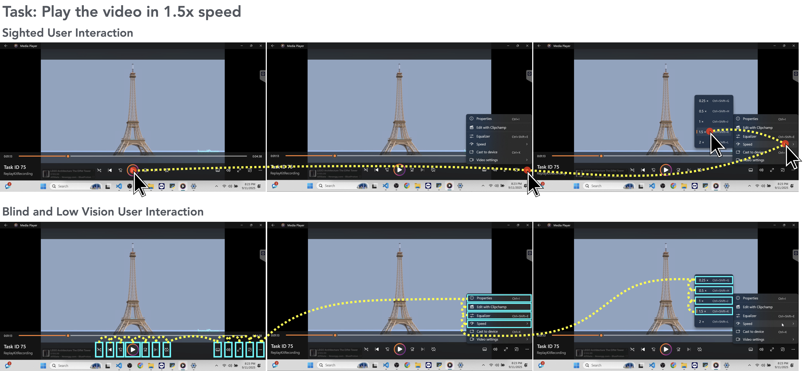
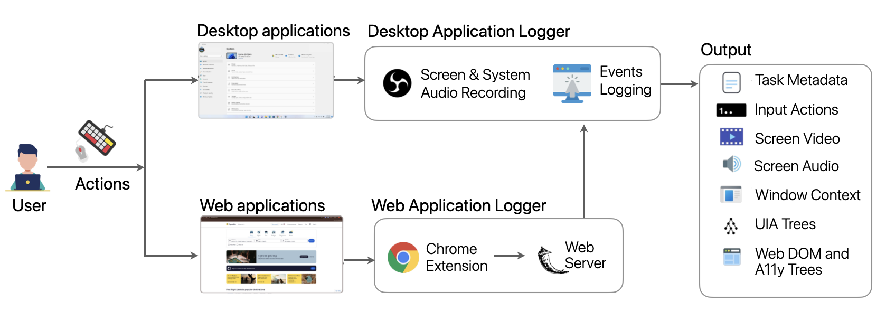
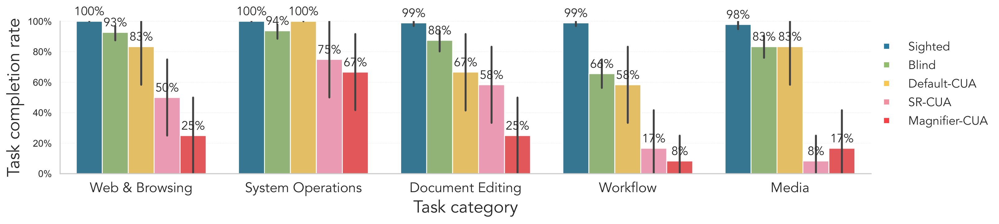
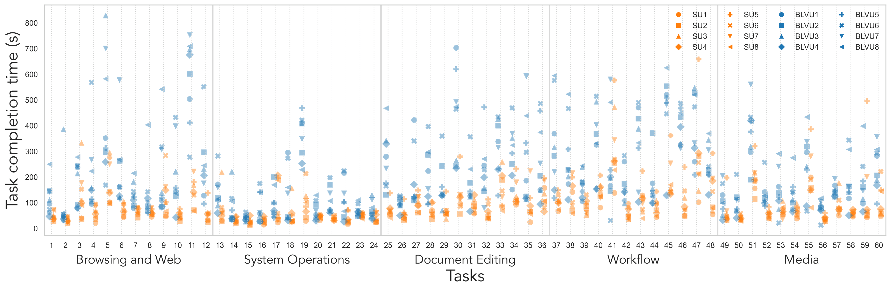
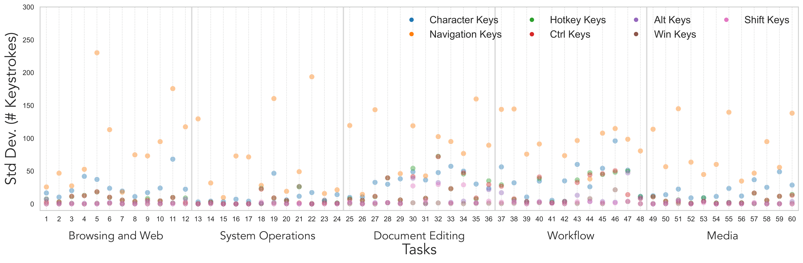
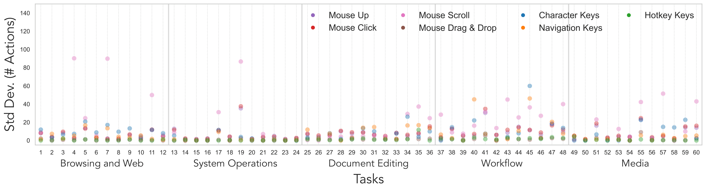
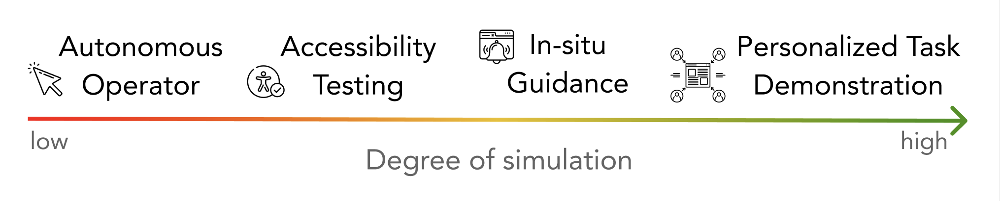

UC Berkeley, University of Michigan
CHI 2026
* Equal contribution, † Equal supervision
Computer Use Agents (CUAs) operate interfaces by pointing, clicking, and typing - mirroring interactions of sighted users (SUs) who can thus monitor CUAs and share control. CUAs do not reflect interactions by blind and low-vision users (BLVUs) who use assistive technology (AT). BLVUs thus cannot easily collaborate with CUAs. To characterize the accessibility gap of CUAs, we present A11y-CUA, a dataset of BLVUs and SUs performing 60 everyday tasks with 40.4 hours and 158,325 events. Our dataset analysis reveals that our collected interaction traces quantitatively confirm distinct interaction styles between SU and BLVU groups (mouse- vs. keyboard-dominant) and demonstrate interaction diversity within each group (sequential vs. shortcut navigation for BLVUs). We then compare collected traces to state-of-the-art CUAs under default and AT conditions (keyboard-only, magnifier). The default CUA executed 78.3% of tasks successfully. But with the AT conditions, CUA's performance dropped to 41.67% and 28.3% with keyboard-only and magnifier conditions respectively, and did not reflect nuances of real AT use. With our open A11y-CUA dataset, we aim to promote collaborative and accessible CUAs for everyone.

A11y-CUA captures how blind and low-vision users (BLVUs), sighted users (SUs), and computer use agents (CUAs) complete real-world desktop and web tasks, enabling direct analysis of accessibility gaps in agent behavior. The above figure is an example of interaction traces from SUs and BLVUs performing a task in the A11y-CUA dataset (to play a video in 1.5x speed). SUs (top) complete the task primarily through mouse interactions, resulting in fewer steps to complete the tasks. On the other hand, BLVUs (bottom) use keyboard navigation and screen reader feedback, which generally leads to longer interaction sequences.
| Participants | 16 humans (8 BLVUs, 8 SUs), 2 CUAs (Claude Sonnet 4.5, Qwen3-VL-32B-Instruct) |
| Tasks | 60 everyday computer tasks |
| Total Recording Duration | 40.4 hours |
| Events Recorded | 158,325 |
| Task Categories | Browsing & Web, System Operations, Document Editing, Workflow, Media |
| Task Scope | 26 single-app tasks, 34 multi-app tasks |
We evaluate CUA performance under three conditions that mirror common usage patterns for sighted users and assistive technology use.
Uses both keyboard and mouse with full desktop visibility at standard scaling. This condition represents sighted-style interaction, where the agent can point-and-click visible controls and execute mixed input actions during task completion.
Operates in a keyboard-only action space with mouse actions disabled, while a screen reader setup is active. This approximates interaction constraints faced in screen-reader workflows and emphasizes focus navigation, key sequences, and command-based control.
Uses keyboard and mouse but with a 150 percent magnified viewport that restricts visible context. This approximates low-vision viewing constraints, requiring more panning and zoom-aware navigation.
Select a user and task to preview a task execution video.
No video available for this user/task yet. Add an entry in the manifest inside this page.
We record the following events and their corresponding metadata from users' computer use interactions,
| Event Type | Source | Trigger | Fields Captured |
|---|---|---|---|
| mouse_click | Desktop | Mouse button pressed | cursor, element in focus, application/window, timestamp |
| mouse_up | Desktop | Mouse button released | cursor, element in focus, application/window, timestamp |
| mouse_move | Desktop | Mouse movement (throttled) | delta, cursor position |
| scroll | Desktop + Web | Mouse scroll event | delta, direction |
| drag_drop | Desktop | Cursor moves >= 6 px while button held | from/to app + UIA target, duration, slider changes |
| key_press | Desktop + Web | Non-modifier key press | normalized key name, modifiers, context, element in focus |
| hotkey | Desktop | Modifier + non-modifier combo | combo string (e.g., Ctrl+C), classified intent |
| input | Web | Typing in an input field | selector, element metadata |
| focus / blur | Web | Focus changes | target selector, metadata |
| page | Web | Page load or URL change | DOM + accessibility tree snapshot, tab ID |
We built a lightweight, open-source computer use recorder for collecting synchronized multimodal traces. It captures screen video, system audio, OS-level input (mouse, keyboard, scroll), window/element context, accessibility settings, UI Automation (UIA) snapshots, and web-side DOM plus accessibility tree updates.
The architecture has two main parts: (1) a local application logger that coordinates recording and desktop events, and (2) a web logger server that receives structured browser events from a Chrome extension. All streams are aligned to a unified timeline and summarized in per-task metadata.

SUs tend to work mouse-first with routine scrolling and occasional shortcuts, visually skipping irrelevant items and jumping directly to targets, whereas BLVUs are keyboard-centric and often follow a verify-before-commit routine: they pause to let the screen reader finish, re-perform actions to confirm outcomes, and carefully track focus before issuing commands.

Fig. SUs complete nearly all tasks across categories, while BLVUs show slightly lower success rates, especially for workflow tasks. Default-CUA reaches moderate performance, approaching BLVUs for web and browsing, system operations, and media, but falls further behind on document editing and workflow tasks. Claude 4.5's SR-CUA and Magnifier-CUA models perform substantially worse overall, with particularly low completion rates on workflow and media tasks.

Fig. SUs complete most tasks quickly with a tighter spread (often below 150 seconds), whereas BLVUs show higher central times and greater variance, especially in Document Editing, Workflow, and Media categories. The wide dispersion within both groups shows substantial within-group strategy differences.
We identify distinct within-group strategies: among SUs, some favor mouse-first flows, others rely more on shortcut-friendly patterns or context menus; among BLVUs, interaction varies between walking (Tab/Arrow step-by-step), chunk-jumping with Ctrl/Shift shortcuts, and ribbon routes driven by Alt/Win menus.

Fig. Cross-BLVU standard deviation in keystrokes by task and keystroke type (lower is more consistent). Each point reports, for a given task, the variance across BLVUs in character input, navigation keys (Tab/Arrow), and hotkeys (Ctrl/Alt/Win/Shift). Variability is generally small for browsing and system operations, but rises sharply for document editing and remains elevated in workflow and media. Hotkeys categories are typically low-variance, with occasional Ctrl spikes during editing. The high dispersion indicates diverse strategies (typing vs. navigation vs. shortcuts) for the same task.

Fig. Cross-SU standard deviation in keyboard and mouse actions by task and action type (lower is more consistent). Larger values indicate less predictable behavior. Mouse scroll exhibits the highest dispersion with occasional large spikes. Mouse clicks and navigation keys are also variable, especially in workflow and media tasks. Hotkeys remain near zero across tasks, and drag-and-drop spikes only for tasks that require it.
Default-CUA partially resembles sighted behavior by pointing and clicking visible controls, but under-uses efficient strategies such as drag-and-drop, scrolling to reveal context, and hotkeys, tending instead to type long strings and take more keyboard-centric paths.
SR-CUA shows many more arrow-key navigation steps, pane-cycling, and re-focusing attempts. Magnifier-CUA combines mouse and keyboard input, but frequently relies on Win+R launches and path-jumping behavior instead of navigating naturally through the intended interface. SR-CUA and Magnifier-CUA diverge from BLVU workflows: they often replay long navigation sequences or get stuck in zoomed-in regions rather than performing minimal in-place repairs and leveraging rich accessibility cues as BLVUs do.
Across all three conditions, a recurring qualitative failure is that agents complete intermediate steps but omit the final confirmation action such as Save, Apply, Done, or Submit. In several tasks, SR-CUA and Magnifier-CUA also incorrectly treat simply locating a file or window as the end goal, rather than continuing through the full operation required for task completion.
We identify three recurrent gaps when CUAs operate under assistive-technology constraints,
The perception gap arises when agents cannot access the same signals users perceive, such as screen-reader announcements, ARIA state changes, or content that is off-viewport under magnification.
The cognitive gap appears as weak tracking of task state and goal completion across steps and across applications, especially in long, multi-app workflows.
The action gap shows up as under-use of robust interaction methods, fragile drag-and-drop behavior, and failure to execute reliable final "finish moves" in the correct context.
A11y-CUA is useful for benchmarking accessible CUAs, training interaction models under AT constraints, and analyzing strategy differences across user groups. We think about CUAs along a spectrum defined by how closely they simulate BLVUs’ assistive interactions.

At the low-simulation end, CUAs prioritize autonomous task completion, at the mid-spectrum CUAs simulate common BLVU interaction patterns for robustness testing, and towards high-simulation CUAs approximate an individual BLVU's strategies to support personalized instruction, tutorials, and collaborative assistance.
@inproceedings{gubbi2026a11y,
title={A11y-CUA Dataset: Characterizing the Accessibility Gap in Computer Use Agents},
author={Gubbi Mohanbabu, Ananya and Natalie, Rosiana and Kim, Brandon and Guo, Anhong and Pavel, Amy},
booktitle={Proceedings of the 2026 CHI Conference on Human Factors in Computing Systems},
pages={1--26},
year={2026}
}